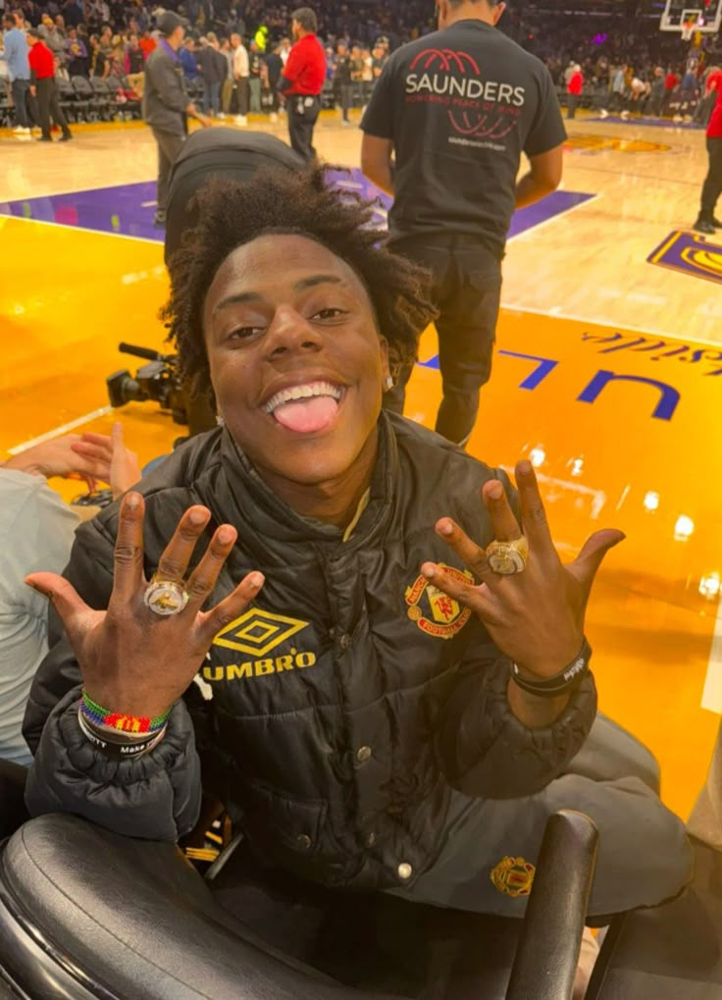

9:41

IShowSpeed
Youtuber
YouTube
Made with View
Link
▶
12,408 views
this week
New visitor
Mobile · from TikTok
Opening YouTube…
9:41
0:00 / 1:10:41
Speed vs. Cole Palmer EA FC 1v1! ⚽
@IShowSpeed
2.6M views
2d ago
...more
Subscribe
Subscribed ✓
Comments
2.2K
Found this straight from his bio link 🔥
24:18
Courtside with Speed: the full vlog
IShowSpeed · 1.3M views · 5d ago